DemandIQ UI audit
2026-11-11 · demo corridor: El Cajon Blvd (Park Blvd, Texas St, 30th St), San Diego, counts 2025, SANDAG forecast to 2035 · both themes · desktop 1440×900 and phone 390×780 · branch fix/ui-basics
1. Results screens: can an engineer read them? · 2. How results could look (from your mockups) · 3. Basic fixes, before / after · 4. Problems left · 5. Every control, screen by screen · 6. Bigger UX proposals · 7. Guided helper (your decision) · 8. Not checked
1. Results screens: can an engineer read them?
Every number, code, badge and text block on the seven results screens, what an engineer should read from it, and whether the screen makes that clear. Left: today (after the basic fixes, dark theme). Right: the closest mockup you approved. DemandIQ shows volumes and forecasts only; delay, LOS and queues stay in Traffic Analysis.
S6 Run analysis (balancing summary) — 25 shown · 9 clear · 16 unclear

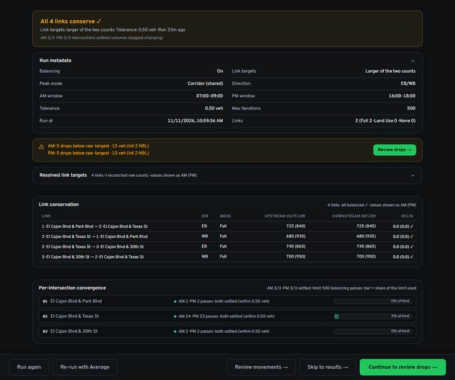

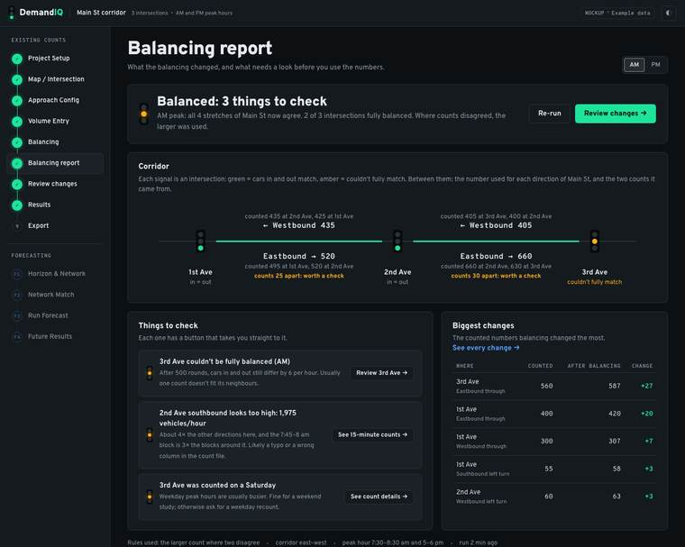
| Shown | What an engineer should read | |
|---|---|---|
| Headline "All 4 links conserve ✓" in amber | Balancing finished and the counts between neighbours now agree | unclear — "conserve" is engine talk; amber means caution while the tick means fine |
| "Link targets: larger of the two counts" | Where two counts of the same street disagreed, the bigger one was used | unclear — "link target" is internal; no street named |
| "Tolerance: 0.50 veh" | How close is close enough | unclear — no so-what for the reader |
| "Run 5m ago" | When the numbers were made | clear |
| "AM 3/3 · PM 3/3 intersections settled (volumes stopped changing)" | Every intersection balanced in both peaks | clear — explained in brackets |
| Run metadata: Balancing On | Balancing was used | clear |
| Run metadata: Peak mode Corridor (shared) | One common peak hour for the whole street | unclear — meaning not shown |
| Run metadata: Direction EB/WB | The main street runs east–west | unclear — direction code, no street name |
| Run metadata: AM/PM window 07:00–09:00 | The count periods | clear |
| Run metadata: Max iterations 500 | Engine limit | unclear — engine setting, means nothing to the reader |
| Run metadata: Run at (date and time) | When the numbers were made | clear — repeats "Run 5m ago" |
| Run metadata: Links 2 (Full 2 · Land Use 0 · None 0) | How many street sections are balanced | unclear — mode names are internal |
| Warning "AM: 5 drops below raw · largest -15 veh (Int 2 NBL)" | Five turning numbers went down; the biggest is Texas St northbound left, 15 cars | unclear — "Int 2 NBL" and "raw" are codes |
| Button "Review drops →" (was "Review in S7 →") | Go and check the numbers that went down | clear — fixed in this PR |
| "Resolved link targets · 1 reconciled raw counts" | One street section had two counts that disagreed | unclear — three jargon words in one line |
| Link table: street pair "1 · El Cajon Blvd & Park Blvd → 2 · …" | Which block of El Cajon Blvd | clear — street names shown |
| Link table: DIR "EB" | Eastbound | unclear — code |
| Link table: MODE "Full" | Balanced both ends | unclear — internal mode name |
| Link table: UPSTREAM OUTFLOW / DOWNSTREAM INFLOW "725 (840)" | Cars leaving one signal and arriving at the next, AM (PM) | unclear — AM and PM packed in one cell, no unit |
| Link table: DELTA "0.0 (0.0) ✓" | They match | unclear — decimals on cars, no unit |
| Convergence rows "AM 2 · PM 2 passes · both settled (within 0.50 veh)" | Each intersection balanced | unclear — "passes" is engine talk |
| Bar "0% of limit" / "5% of limit" | How hard the engine worked | unclear — no so-what for the reader |
| Button "Run again" | Re-balance | clear |
| Button "Re-run with Average" | Re-balance using the average of the two counts | unclear — average of what is not said |
| Buttons "Review movements →", "Skip to results →", "Continue to review drops →" | Three ways forward | clear — but three next steps compete |
S6 Review movements (one intersection) — 12 shown · 5 clear · 7 unclear

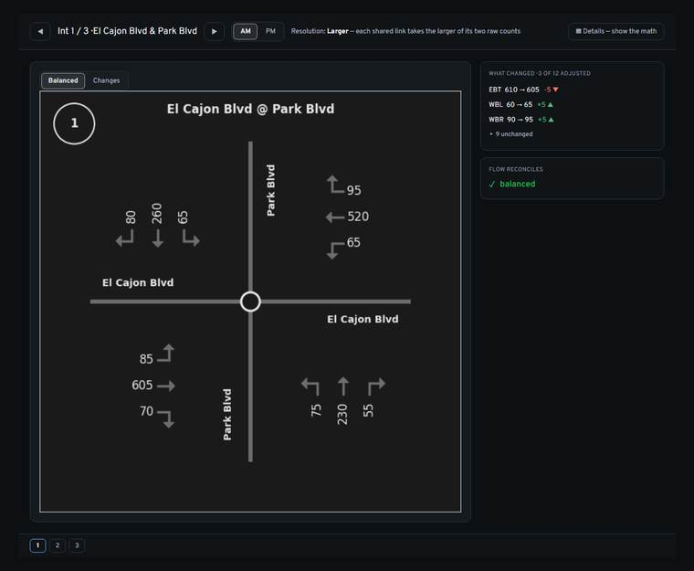

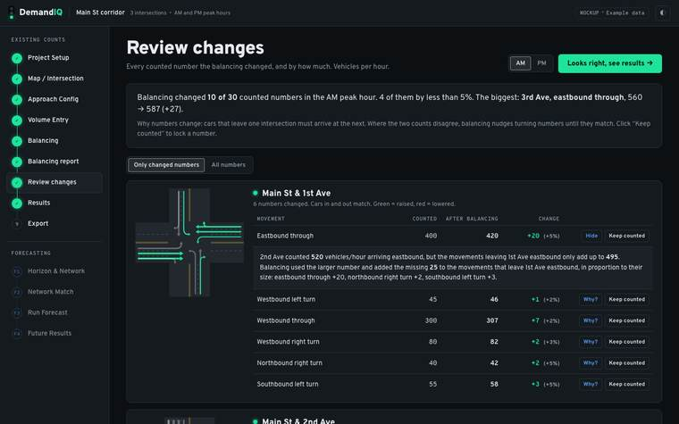
| Shown | What an engineer should read | |
|---|---|---|
| "Int 1 / 3 · El Cajon Blvd & Park Blvd" with ◀ ▶ | Which intersection, 1 of 3 | unclear — "Int" code before the name |
| AM / PM switch | Which peak | clear |
| "Resolution: Larger — each shared link takes the larger of its two raw counts" | Rule used where counts disagreed | unclear — "link", "raw" |
| "Details — show the math" | Open the working | clear |
| Balanced / Changes tabs | Numbers after balancing, or what changed | clear |
| Diagram arrows with numbers (95, 520, 65 …) | Cars per hour for each turn, after balancing | unclear — no unit on the diagram |
| Circled "1" on the diagram | Intersection number | unclear — internal number, street name already shown |
| "WHAT CHANGED · 3 OF 12 ADJUSTED" | Three turning numbers changed | clear |
| "EBT 610 → 605 -5 ▼" | Eastbound through went from 610 to 605 | unclear — movement code EBT |
| "▸ 9 unchanged" | The rest stayed the same | clear |
| "FLOW RECONCILES ✓ balanced" | Cars in = cars out here | unclear — "reconciles" is jargon |
| Page buttons 1 2 3 | Jump to another intersection | unclear — numbers without street names |
S7 Review drops — 18 shown · 6 clear · 12 unclear

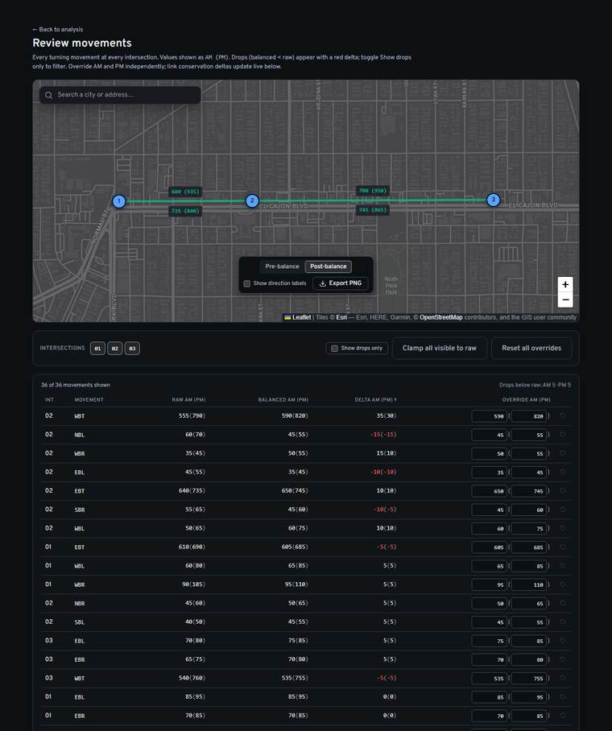

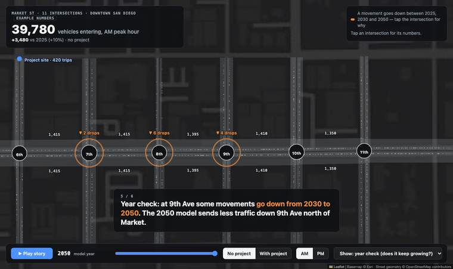
| Shown | What an engineer should read | |
|---|---|---|
| Title "Review movements" | This page lists every turning number | unclear — same title as the S6 page; the step is called Review drops |
| Intro paragraph (AM (PM), drops, override, link conservation deltas) | How to read the table | unclear — four jargon terms |
| Map labels "725 (840)" on each block | Cars on that block, AM (PM) | unclear — no unit, no direction |
| Pre-balance / Post-balance switch | Counted numbers or balanced numbers | unclear — jargon |
| "Show direction labels", "Export PNG" | Map options | clear |
| Intersection chips 01 02 03 | Filter to one intersection | unclear — codes, no names |
| "Show drops only" | Only numbers that went down | clear |
| "Clamp all visible to raw" | Put the dropped numbers back to what was counted | unclear — "clamp", "raw" |
| "Reset all overrides" | Undo my edits | clear |
| "36 of 36 movements shown" | Table size | clear |
| "Drops below raw: AM 5 · PM 5" | Five numbers went down in each peak | unclear — "raw" |
| Table INT "02" | Which intersection | unclear — code |
| Table MOVEMENT "WBT" | Westbound through | unclear — code |
| Table RAW / BALANCED / DELTA "555(790)" | Counted, after balancing, change; AM (PM) | unclear — AM and PM packed in one cell, no unit |
| Two OVERRIDE boxes per row | Type my own AM and PM number | unclear — unlabelled boxes |
| Per-row reset button ("No override to reset") | Undo this row | clear |
| "Link conservation (with overrides)" tables UP / DOWN / DELTA / MODE | Neighbours still agree after my edits | unclear — jargon headers |
| "Continue to results →" | Next step | clear |
S7 Results — 15 shown · 8 clear · 7 unclear

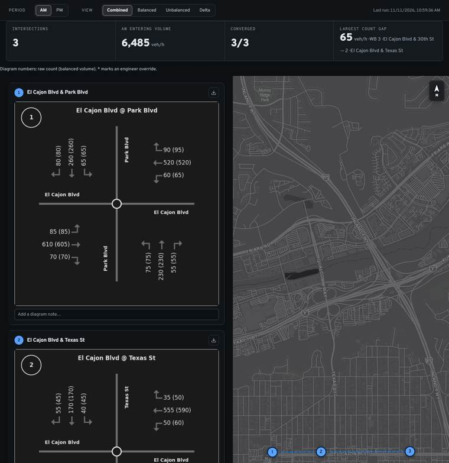

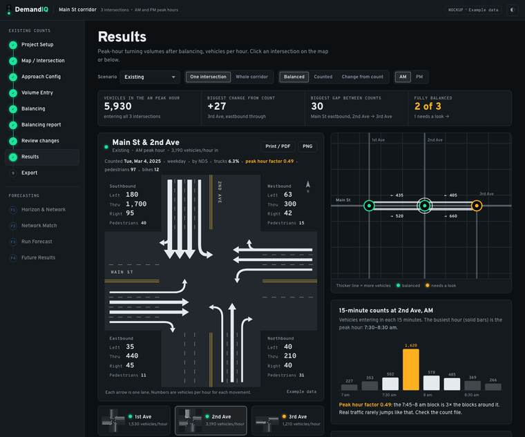
| Shown | What an engineer should read | |
|---|---|---|
| PERIOD AM / PM | Which peak | clear |
| VIEW Combined / Balanced / Unbalanced / Delta | What the diagram numbers show | unclear — "Combined" and "Delta" not explained here |
| "Last run: 11/11/2026, 10:59 AM" | When the numbers were made | clear |
| KPI INTERSECTIONS 3 | Corridor size | clear |
| KPI AM ENTERING VOLUME 6,485 veh/h | Cars entering all intersections in the AM peak hour | clear — has a unit |
| KPI CONVERGED 3/3 | All intersections balanced | unclear — "converged" |
| KPI LARGEST COUNT GAP "65 veh/h · WB 3 · … → 2 · …" | The two counts of one block differ by 65 cars | unclear — "WB 3" code, no so-what |
| Legend "raw count (balanced volume). * marks an engineer override" | How to read two numbers per arrow | clear |
| Diagram numbers "90 (95)" | Counted (after balancing) per turn | unclear — two numbers per arrow need the legend; no unit |
| Diagram title "El Cajon Blvd @ Park Blvd" | Which intersection | clear |
| Circled number on each card and map pin | Intersection number | unclear — internal number |
| "Add a diagram note…" | Write a note on the figure | clear |
| Unlabelled download icon on each card | Download this diagram | unclear — icon only |
| Map with pins 1 2 3 | Where the intersections are | unclear — no volumes or names on the map |
| "Continue to export →" | Next step | clear |
S8 Export (summary and preview) — 14 shown · 5 clear · 9 unclear

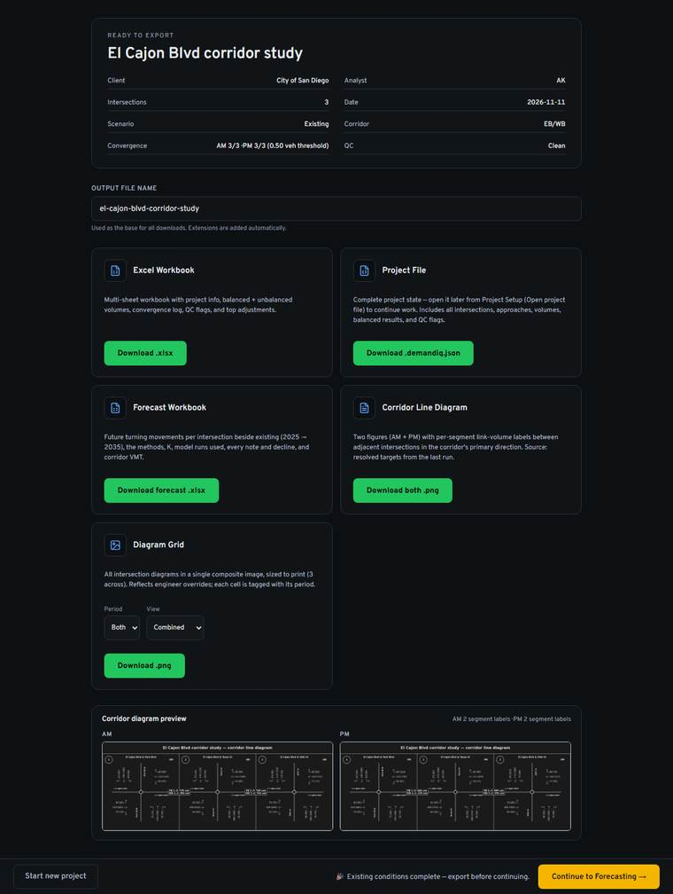

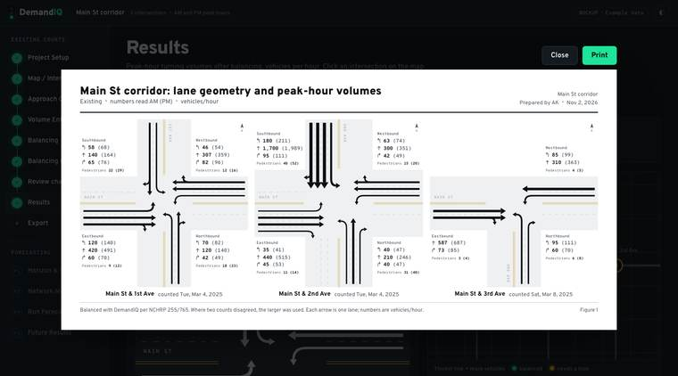
| Shown | What an engineer should read | |
|---|---|---|
| Project name, Client, Analyst, Intersections, Date, Scenario | Report header | clear |
| Corridor "EB/WB" | Main street runs east–west | unclear — code |
| Convergence "AM 3/3 · PM 3/3 (0.50 veh threshold)" | Balancing finished everywhere | unclear — jargon |
| QC "Clean" | No warnings | unclear — "QC" unexplained; S6 still showed 5 drops |
| Output file name | Name for the downloads | clear |
| Excel Workbook text ("convergence log, QC flags, top adjustments") | What is in the Excel file | unclear — jargon |
| Project File text | Save the project to reopen later | clear |
| Forecast Workbook text ("the methods, K, … corridor VMT") | What is in the forecast Excel | unclear — K and VMT unexplained |
| Corridor Line Diagram text ("per-segment link-volume labels … resolved targets") | A street-long figure of volumes | unclear — jargon |
| Diagram Grid Period / View dropdowns (combined, delta) | What to print | unclear — "combined", "delta" |
| "AM 2 segment labels · PM 2 segment labels" | How many blocks are labelled | unclear — no so-what |
| Preview images | What the figure will look like | unclear — text too small to read at screen size |
| "Existing conditions complete — export before continuing" | Save before forecasting | clear |
| Continue to Forecasting / Start new project | Next step | clear |
F3 Run forecast (output) — 8 shown · 3 clear · 5 unclear

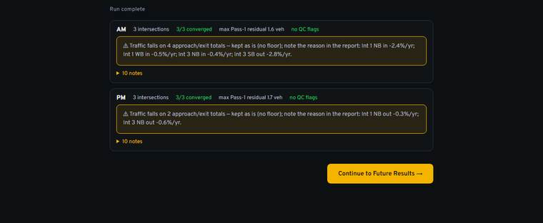

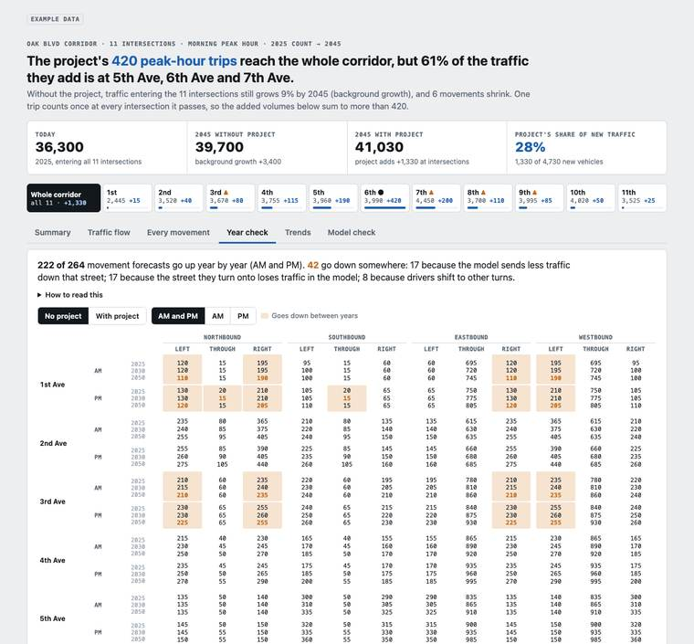
| Shown | What an engineer should read | |
|---|---|---|
| "Run complete" + AM / PM headings | The forecast ran | clear |
| "3 intersections" | Size | clear |
| "3/3 converged" | All balanced | unclear — "converged" |
| "max Pass-1 residual 1.6 veh" | Engine error left over | unclear — engine term, no so-what |
| "no QC flags" | No warnings | unclear — "QC" |
| Warning "Traffic falls on 4 approach/exit totals — kept as is (no floor) … Int 1 NB in -2.4%/yr …" | Four approaches lose traffic by 2035; say why in the report | unclear — codes (Int 1 NB in/out), "no floor" |
| "10 notes" fold | More detail | unclear — no hint what the notes say |
| "Continue to Future Results →" | Next step | clear |
F4 Future results — 17 shown · 4 clear · 13 unclear

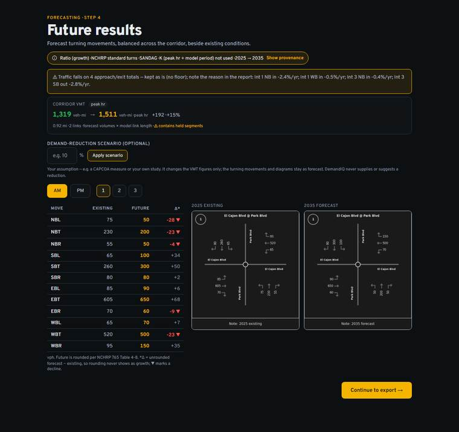

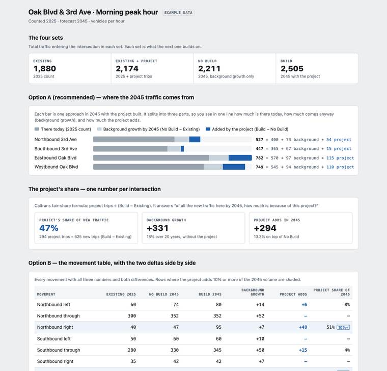
| Shown | What an engineer should read | |
|---|---|---|
| Chip "Ratio (growth) · NCHRP standard turns · SANDAG · K … not used · 2025 → 2035" | Method and years used | unclear — method names and K |
| "Show provenance" | Where the numbers came from | unclear — word unclear |
| Warning "Traffic falls on 4 approach/exit totals …" (same as F3) | Some approaches lose traffic | unclear — codes |
| "CORRIDOR VMT · peak hr" | Vehicle-miles on the corridor in the peak hour | unclear — abbreviation |
| "1,319 veh-mi → 1,511 veh-mi" | Driving on the corridor today vs 2035 | unclear — unit jargon, no so-what |
| "+192 · +15%" | Growth | clear |
| "0.92 mi · 2 links · forecast volumes × model link length" | How VMT was worked out | unclear — formula text |
| "⚠ contains held segments" | Some blocks were not forecast | unclear — "held" unexplained |
| Demand-reduction box + "Apply scenario" (CAPCOA text) | Apply my own % cut to VMT | unclear — CAPCOA, VMT |
| AM / PM | Which peak | clear |
| Buttons 1 2 3 | Which intersection | unclear — no street names |
| Table MOVE "NBL" | Northbound left | unclear — code |
| Table EXISTING / FUTURE numbers | Cars per hour today and in 2035 | clear — unit in footnote |
| Table Δ* (e.g. 75 → 50 shows -28) | Change | unclear — does not equal the two numbers shown (unrounded) |
| Footnote "vph. Future is rounded per NCHRP 765 Table 4-8 …" | Rounding rule | unclear — reference text |
| 2025 Existing / 2035 Forecast diagrams | The two figures side by side | unclear — labels ~8 px, unreadable |
| "Continue to export →" | Next step | clear |
2. How each results screen could show its answer (proposals, not built)
Built from your approved mockups in projects/demandiq/mockups/. Pick by number.
R1. Results = one corridor map, not a stack of diagram cards
The street drawn on the map, band width = vehicles per hour on each block, each signal named by its cross street. Four plain numbers on top: "Vehicles in the AM peak hour 6,485 entering all 3 intersections", "Biggest change from count", "Biggest gap between counts", "Fully balanced 3 of 3". Tap a signal and its lane-arrow diagram opens with words: "Southbound · Left 180 · Thru 1,700".

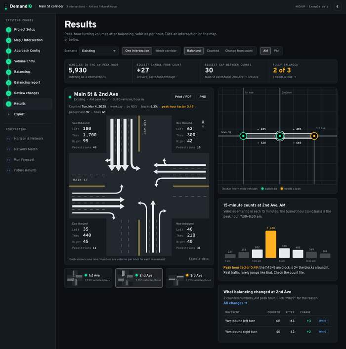

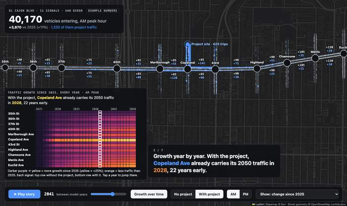
R2. Run analysis + Review drops = one "Balancing report" page
One headline ("Balanced: 3 things to check"), the street as a line of signals with the number used for each block and the two counts it came from, a "Things to check" list where every item names the street and has one button, and a "Biggest changes" list in words. Each changed number gets "Why?" (one sentence with real street names) and "Keep counted" instead of two unlabelled override boxes. Run metadata, passes, link tables move to the Excel workbook.

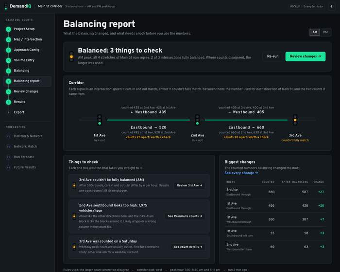

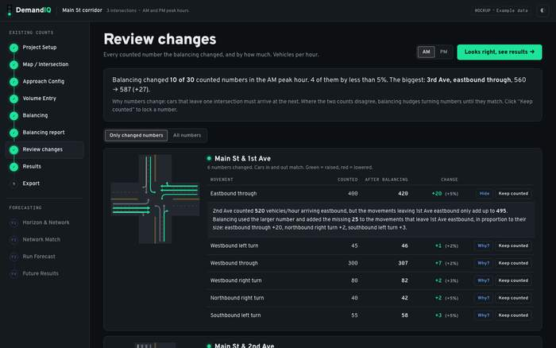
R3. Flags on the map with a plain reason
Intersections with a drop or a big count gap get an amber ring and "▼ 2 drops"; tapping it shows the reason sentence. Replaces the 36-row table and the 01/02/03 chips.

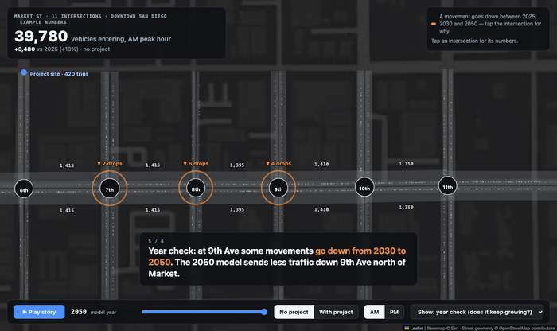
R4. Future results = the corridor map with today vs forecast
Same map as R1, band width = 2035 volume, each block labelled "+85" (growth since 2025). When a project scenario exists, split it in two colours: background growth and project trips ("+85 / +35"). Top number: "40,170 vehicles entering, AM peak hour · +3,870 vs 2025 (+11%)".

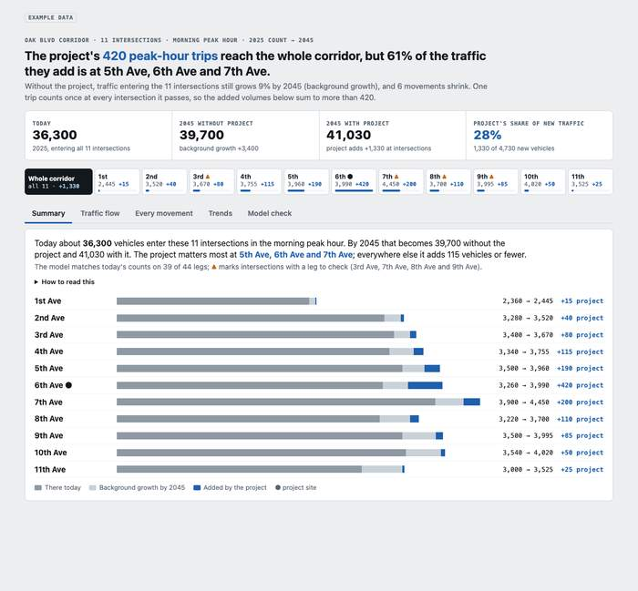
R5. Where the future traffic comes from, per approach
Option A bars per approach in words ("Northbound 3rd Ave 527 = 400 today + 73 background + 54 project") and Option B movement table with words, one unit header, and change columns that equal the numbers shown. Replaces NBL codes and the Δ* that does not match.

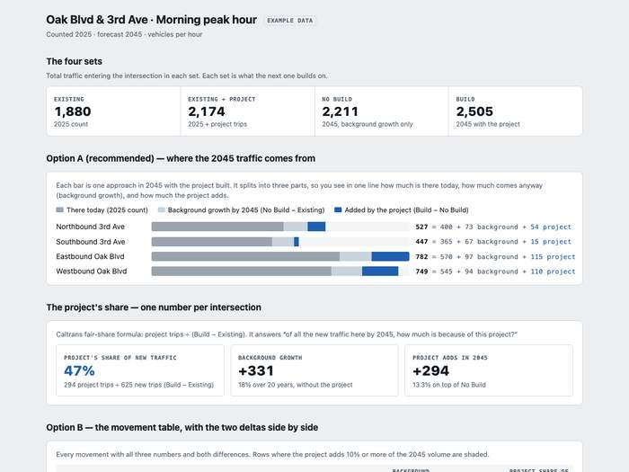
R6. "Does it keep growing?" instead of the "Traffic falls" banner
Movements that go down between model years are shaded, with one plain line each: "9th Ave southbound falls 3% from 2030 to 2050 — the model sends traffic to a new parallel route." Replaces "Int 1 NB in -2.4%/yr … (no floor)" and the "10 notes" fold. F3 itself then shows one sentence: "Forecast ready: traffic entering the corridor grows 15% by 2035 (AM). 4 approaches lose traffic — see why".

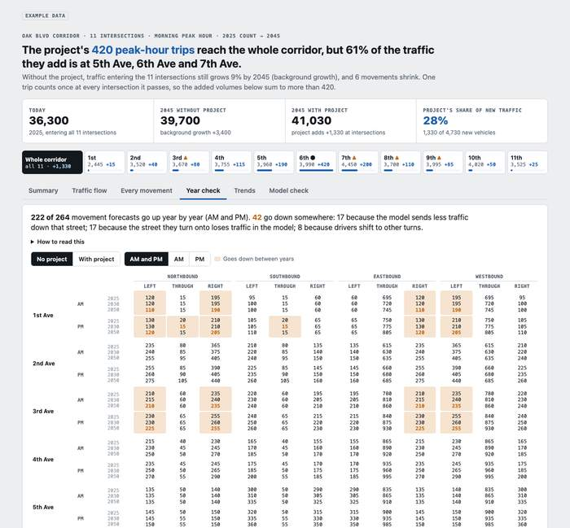
R7. Export figures on white paper at readable size
Preview the printed sheet itself (white paper, arrows per lane, "Southbound ↰ 58 (68)", vehicles/hour in the subtitle) at full width, instead of thumbnails with 8 px text. Each download card says in one line what the file is for.

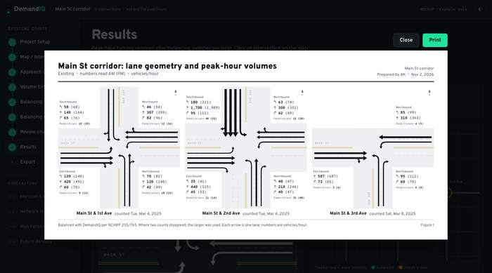

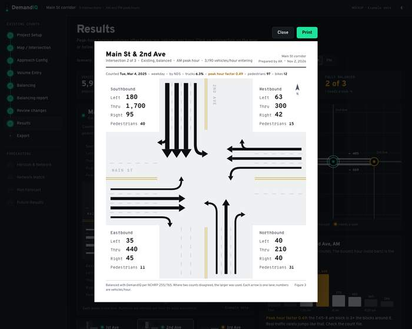
3. Basic fixes in this PR — before / after
Shared rules first: one dropdown rule, theme colours, one phone block. Automated check over all 56 screenshots: text below the readable contrast line went from 248 to 4 (the 4 left are the disabled "Extract counts (0)" button). Console errors: 0 before and after.
B1Open dropdown list unreadable: pale text on a white list.
Every dropdown, dark theme (F1 model year, F3 both methods, S2, S4, S5, S8, model-file upload)
Cause: Selects sit on a 2%-white see-through fill and options had no colour of their own, so Chrome on Windows paints the open list white under the light text.
Fix: One shared rule in shell.css gives every option the theme's solid card colour and text colour (computed option colour before: transparent; after: #151A1F with #E6EAEE text).
B2Amber, green and red text on white is too pale to read (contrast 1.6–2.9:1).
Day theme: F1–F4 headers and step lamps, DemandIQ logo, F4 Future column and VMT, F2/F3 badges, S6 warnings, S7 drops, S3 lane pills
Cause: Signal colours were kept identical in both themes, plus hard-coded pale amber/red in 15 rules.
Fix: Day theme now uses darker ink of the same hues (4.5:1 or better on the grey page) with white text on filled amber/green buttons; hard-coded colours now use the theme tokens.

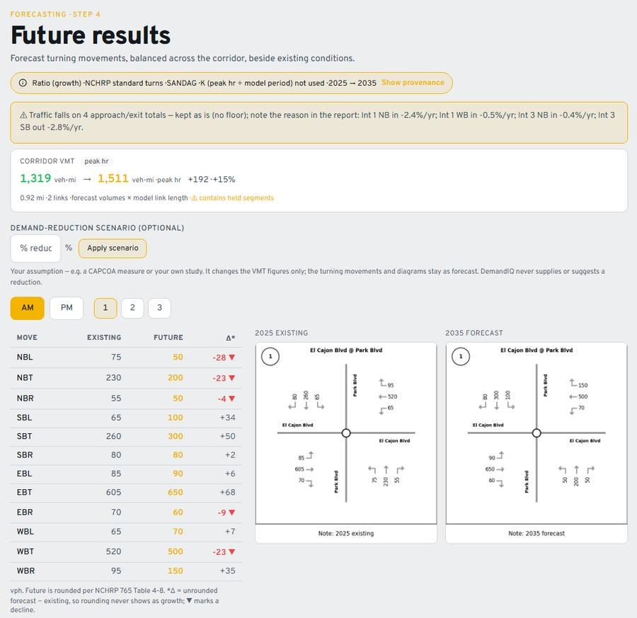

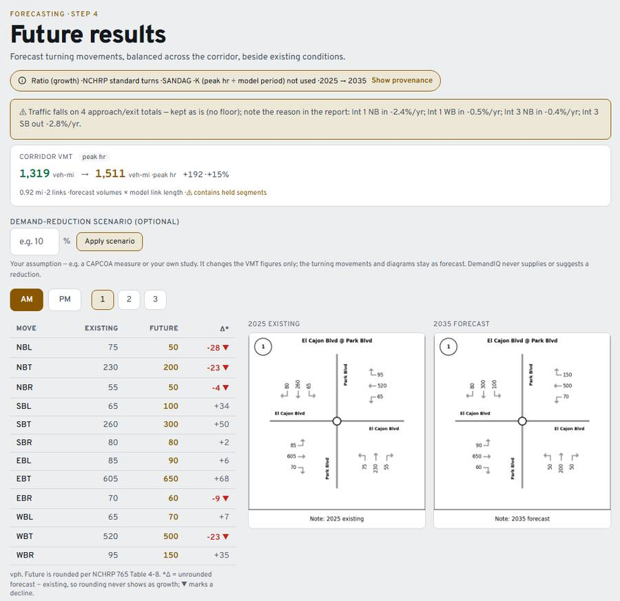
B3White numbers on light-blue circles are faint (2.6:1).
Dark theme: S2 list, S3 header, S4 cards, S7 cards, map pins
Cause: Text on the accent colour was hard-coded white in 15 rules.
Fix: New --on-accent token: dark ink on the light blue at night, white on the dark blue by day.

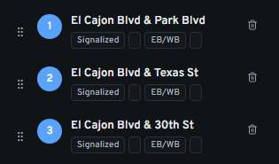

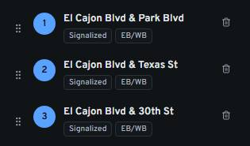
B4Change numbers "+5 ▲ / -5 ▼" are dark green/red on black (2.9:1).
S6 Review movements, dark theme
Cause: Delta colours were the white-paper print values in both themes.
Fix: Lighter green/red at night; print and day keep the paper values.

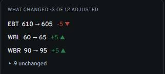

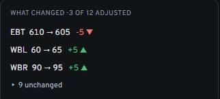
B5Empty grey boxes next to "Signalized" and "EB/WB".
S2 Map, intersection list
Cause: Projects saved before the legs field existed have no legs/cross-direction, and the list drew a box anyway.
Fix: Blank values are skipped.


B6Placeholder cut off as "% reduc", next to a second % sign.
F4 Future results, demand-reduction box
Cause: Placeholder longer than the 150 px box.
Fix: Placeholder is now "e.g. 10"; the % sign stays beside the box.

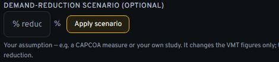

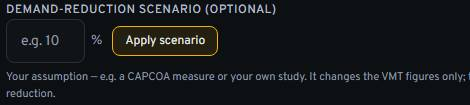
B7Right 16 px of the screen cut off.
Phone: S2–S8 (every edge-to-edge screen)
Cause: These screens cancel the page padding with -24/-32 px margins, but phones use 16 px padding.
Fix: On narrow screens the margins match the 16 px padding (one rule).

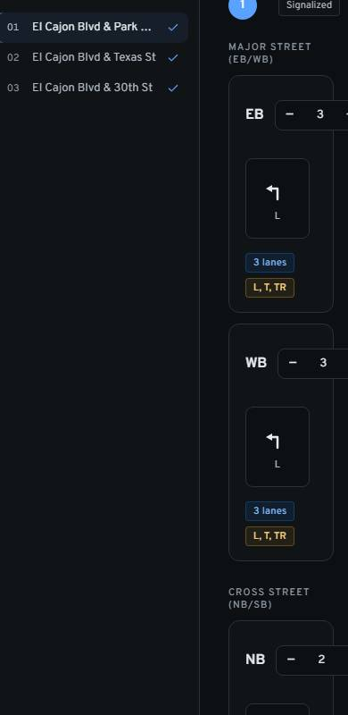

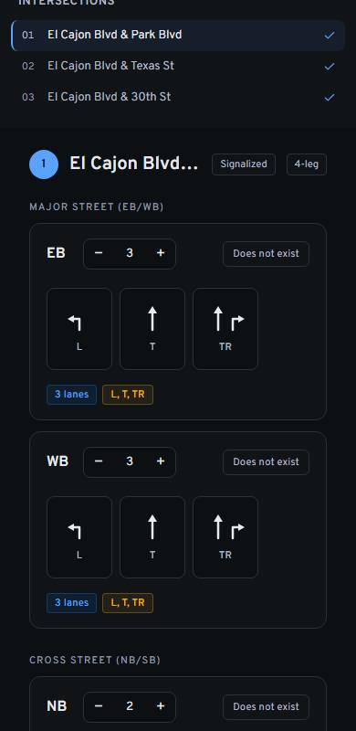
B8Side-by-side panes squeezed: map 100 px wide under the list, text one word per line, F2 map gone, F4 diagrams as thumbnails cut off.
Phone: S2 map, S5 settings, S7 results, F2 network match, F4 diagrams, S6 review, S8 cards
Cause: Desktop two-column layouts had no phone rule.
Fix: Under 720 px the panes stack: map on top at 55% of the screen height, list or card below.

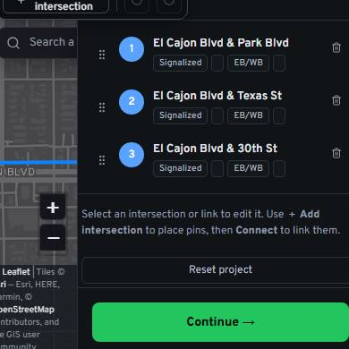

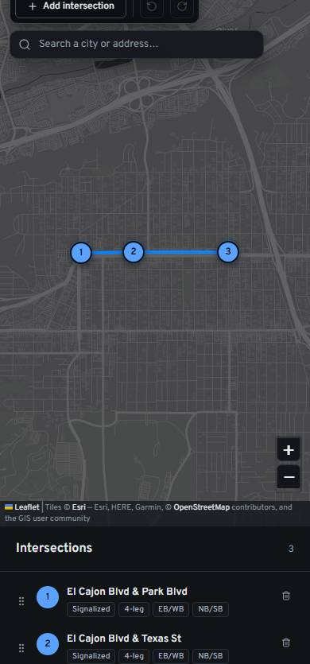
B8bSettings text one word per line; peak-hour buttons cut off.
Phone: S5 Balancing settings
Cause: Form and summary side by side; label and buttons on one forced row.
Fix: Stacked panes; label rows wrap.

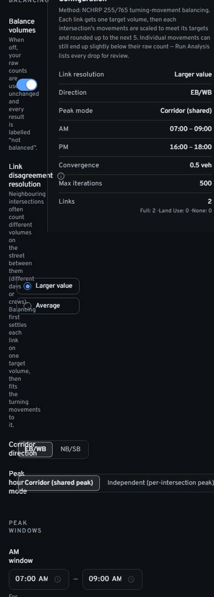

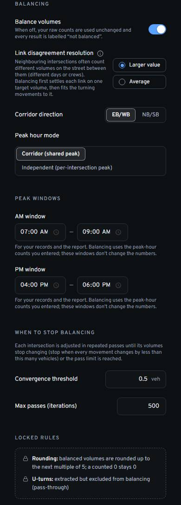
B8cExisting/forecast diagrams squeezed into 60 px thumbnails and cut off.
Phone: F4 Future results
Cause: Table and diagrams forced side by side.
Fix: Diagrams go under the table, full width.

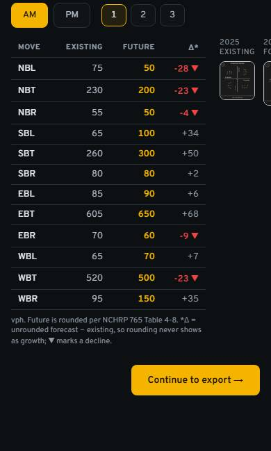

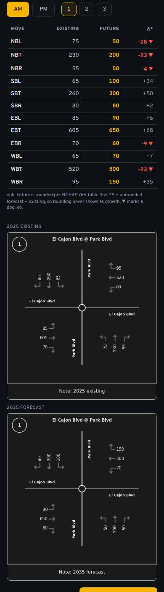
B9"Combined Bala…", "Reset overr…", "Conti…" cut off at the right.
Phone: S7 Results toolbar, S7 Review drops buttons, S3 footer
Cause: Toolbars were fixed-height single rows.
Fix: Toolbars and button rows wrap to a second line.

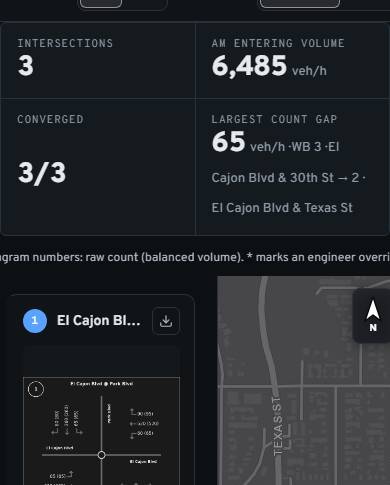

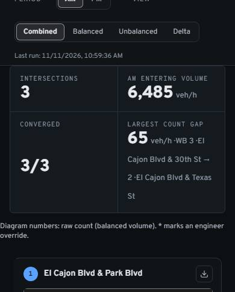
B10Table text one word per line; S7 table 195 px past the card edge.
Phone: S6 link table, S7 Review drops table
Cause: Wide tables squeezed into 350 px.
Fix: Wide tables keep their rows on one line and scroll sideways inside their card.

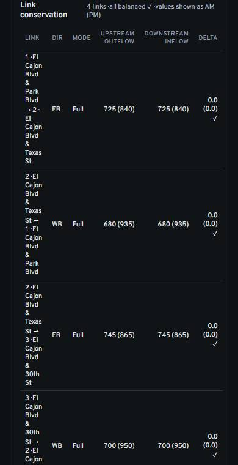

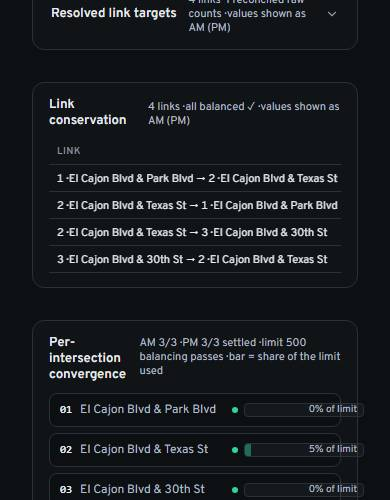
B11Each count card 14 px wider than the screen.
Phone: S4 Volume entry
Cause: Cards had a 380 px minimum width.
Fix: Minimum is now 380 px or the screen width, whichever is smaller.

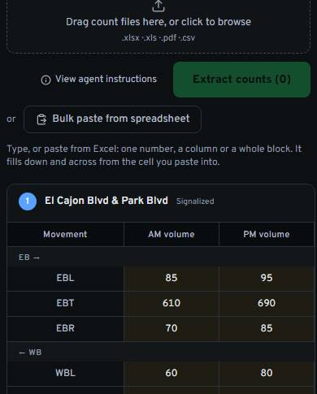

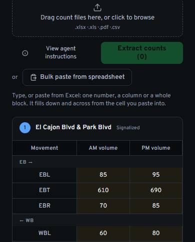
B12Red "Unmatched" badge 4.3:1 on its own tint.
F2 Network match, dark theme
Cause: #EF4444 red is slightly too dark for night.
Fix: Night red is now Signal Flow's own stop red #FF5A4E.

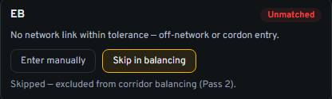

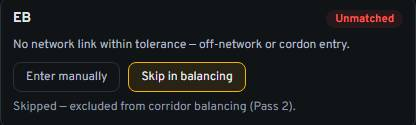
B13Button "Review in S7 →" shows an internal screen code.
S6 Run analysis
Cause: Label written with the step code.
Fix: Button now reads "Review drops →".

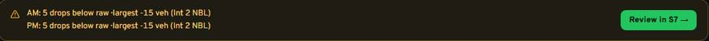

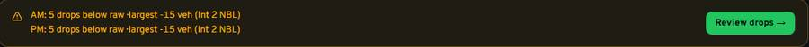
4. Problems left (each needs a UX decision first)
| Where | Problem | Why not fixed now | |
|---|---|---|---|
| L1 | S4, S6, S7, F4 (6 screens) | Movement codes NBL, EBT, WBR and intersection codes Int 2, 01/02/03 instead of "Northbound left at Texas St". | Needs one shared wording rule and an owner-approved format (proposal R5/U10), not a per-screen patch. |
| L2 | All results screens | AM and PM packed into one cell as "555 (790)" with no unit. | Layout change: two columns or a period switch (proposal U10). |
| L3 | F4 Future results | Δ column does not equal the two numbers shown (75 → 50 shows -28) because it uses the unrounded forecast. | Wording or data decision for the owner (proposal R5). |
| L4 | F4, S6, S7, S8 | Diagram labels ~8 px at screen size; preview figures unreadable. | Needs bigger figures or the paper view (proposal R7). |
| L5 | F1, F3, F4, S5 | Help text 10–11 px, long and full of method references (NCHRP §, Furness, K, CAPCOA). | Rewrite is part of the UX pass (proposal U8/U9). |
| L6 | S6 Run analysis | Headline "All 4 links conserve ✓" is amber (caution) although it reports success; the caution is about drops. | Message design (proposal R2). |
| L7 | Phone, every screen | The step rail (12 steps) takes ~410 px (half the screen) above every screen. | Navigation change (proposal U1). |
| L8 | S3 Approach config | Long names cut with "…" in the 240 px intersection list (full name on hover). | Acceptable on desktop; becomes moot with proposal U3. |
| L9 | S4 Volume entry | Disabled "Extract counts (0)" button is faint (2:1). | Disabled controls are allowed to be faint; better to hide it until a file is added (proposal U4). |
| L10 | S1 Project setup | Decorative signal animation shows "Φ4/Φ8 Cross St · C = 72 s" (signal-timing codes) beside the form. | Purpose decision for the owner (proposal U2). |
| L11 | S7 Review drops | Page title "Review movements" is the same as the S6 page; the step is called Review drops. | Naming is part of the merge in proposal R2. |
5. Every control, screen by screen, and its job
S1 Project setup
| Open project file… | Reopen a project saved from Export |
| Talk it through / Type instead | Fill the form by voice or by typing a description |
| Project name, Client/Agency, Scenario name, Analyst initials, Date | Report header |
| Project type: Corridor / Zone / Single intersection | Tells balancing whether neighbours share streets |
| Analysis period: AM peak / PM peak | Which peaks you counted |
| More details (project number, checker) | Optional header lines |
| Save and continue | Next step |
| Signal animation | Decoration, no project data |
S2 Map / intersection
| Add intersection | Arm the map to drop a pin |
| Undo / Redo | Undo map edits |
| Search a city or address | Move the map |
| Pins and link lines | Where the intersections are and which are linked |
| Intersection list (drag handle, name, Signalized / 4-leg / EB/WB / NB/SB pills, bin) | Order, name and type of each intersection; delete |
| Reset project | Clear everything |
| Continue | Next step |
S3 Approach config
| Intersection list | Pick an intersection |
| − / + per approach | Number of lanes |
| Lane buttons L, T, TR | Pick what each lane does |
| Does not exist | Turn an approach off |
| Pills "3 lanes", "L, T, TR" | Summary of the approach |
| Previous / Next | Move between intersections |
| Continue to volume entry | Next step |
S4 Volume entry
| Drop count files / browse | Upload vendor count sheets |
| View agent instructions | See what the reader is told |
| Extract counts (0) | Read the uploaded files |
| Bulk paste from spreadsheet | Paste a whole block from Excel |
| Count cards: movement rows × AM / PM boxes, PHF, HV % | Type or paste each turning count |
| Continue to balancing | Next step |
S5 Balancing settings
| Balance volumes switch | Turn balancing off to use raw counts |
| Link disagreement: Larger value / Average | What to do when two counts of the same block disagree |
| Corridor direction EB/WB / NB/SB | Which way the main street runs |
| Peak hour mode: Corridor / Independent | One shared peak hour or one per intersection |
| AM / PM window times | For the report only |
| Convergence threshold, Max passes | Engine stop rules |
| Locked rules (rounding, U-turns) | Read-only rules |
| Advanced — per-link balance modes | Per-block exceptions |
| Configuration summary panel | Repeats the settings |
| Continue to analysis | Next step |
S6 Run analysis
| Run analysis / Run again / Re-run with Average | Balance the counts |
| Result headline and run line | Did it work |
| Run metadata fold | Settings used |
| Drops warning + Review drops | Numbers that went down |
| Resolved link targets fold | Which count each block used |
| Link conservation table | Proof neighbours agree |
| Per-intersection convergence rows | How many passes each needed |
| Review movements / Skip to results / Continue to review drops | Three next steps |
S6 Review movements
| ◀ ▶ and 1 2 3 | Change intersection |
| AM / PM | Change peak |
| Details — show the math | Open the working |
| Balanced / Changes tabs | Diagram after balancing or the changes |
| What changed list | Which turning numbers changed |
| Flow reconciles box | Cars in = cars out |
S7 Review drops
| Back to analysis | Go back |
| Map with Pre/Post-balance, direction labels, Export PNG | Block volumes on the map |
| Intersection chips 01 02 03 | Filter |
| Show drops only | Filter to numbers that went down |
| Clamp all visible to raw | Put dropped numbers back to the count |
| Reset all overrides | Undo edits |
| Movement table with two override boxes and a reset per row | Check and override each number |
| Link conservation (with overrides) | Proof neighbours still agree |
| Continue to results | Next step |
S7 Results
| Period AM / PM | Change peak |
| View Combined / Balanced / Unbalanced / Delta | What the diagrams show |
| Four KPI tiles | Corridor summary |
| Diagram card per intersection: download, note box | The deliverable figure |
| Map | Where the intersections are |
| Continue to export | Next step |
S8 Export
| Summary card | Project header and status |
| Output file name | Name for downloads |
| Download .xlsx / .demandiq.json / forecast .xlsx / both .png / grid .png | The deliverables |
| Diagram grid Period / View | What to print |
| Corridor diagram preview | Look at the line diagram |
| Start new project | Clear and start over |
| Continue to Forecasting | Next phase |
F1 Horizon & network
| Count year / Horizon year | Years to grow from and to |
| Travel model: SANDAG / Bay Area (MTC) / My model file | Which regional model |
| Base / Horizon toggles + model run dropdown per network | Which model runs to compare |
| Bin per network, Add network file | Remove or add a model run |
| Continue to Network Match | Next step |
F2 Network match
| Pull SANDAG network / Re-pull | Fetch the model roads near your intersections |
| Map with legs | See which model road feeds each leg |
| Intersection 1 2 3 | Change intersection |
| Leg cards: status, model road, heading, model volumes | Check each match |
| Enter manually / Skip in balancing | Fix a leg the model does not cover |
| Continue to Run Forecast | Next step |
F3 Run forecast
| When counts disagree: Larger / Average | Same rule as S5, for the forecast |
| How each road grows (9 methods) | Growth method |
| How road forecasts become turning movements (3 methods) | Turn method |
| Peak hour ÷ model period (K) | Needed by every method except Ratio |
| Run forecast | Run it |
| Run output cards + 10 notes | Did it work, warnings |
| Continue to Future Results | Next step |
F4 Future results
| Method chip + Show provenance | Which method and years |
| Traffic-falls warning | Approaches that lose traffic |
| Corridor VMT card | Driving on the corridor today vs future |
| Demand-reduction % + Apply scenario | My own VMT cut |
| AM / PM, 1 2 3 | Peak and intersection |
| Existing / Future / Δ table | Turning numbers |
| 2025 / 2035 diagrams | Figures |
| Continue to export | Next step |
6. Bigger UX proposals (not built — pick by number)
| U1 | All screens | Phone rail folds into one line: "Step 7 of 12 · Results ▾". On desktop the rail keeps its names but drops the F1–F4 codes (Forecast steps are numbered 9–12 or carry an icon). |
| U2 | S1 | Remove the decorative signal animation (it shows signal-timing codes and no project data) or replace it with the project's own map once intersections exist. |
| U3 | S2 + S3 | Merge approach setup into the map: click an intersection on the map, its approaches open on a small card beside it (house rule: no permanent side panel). The S3 page and its 240 px list go away. |
| U4 | S4 | Show "Extract counts" only after a file is dropped; rows named "Northbound left" instead of NBL; "PHF" → "Peak hour factor", "HV %" → "Trucks %". |
| U5 | S5 | Keep two questions visible ("When two counts of the same block disagree: use the larger / the average" and "Main street runs: east–west / north–south"); everything else (peak mode, windows, passes, locked rules, per-link modes) goes under "Advanced". |
| U6 | S6 + S7 Review drops | One "Balancing report" page (R2) instead of three (Run analysis, Review movements, Review drops) with three competing next buttons. |
| U7 | F1 | "Horizon year" → "Forecast year"; model runs picked automatically from the two years with one line "Using SANDAG 2025 and 2035 runs" and a "Change" link; Base/Horizon toggles hidden. |
| U8 | F2 | Each leg card says "Park Blvd, north side — matched"; node numbers, headings and degree offsets go under "Details". Show only legs that need a decision, with "Type a volume" / "Leave out" in plain words. |
| U9 | F3 | Show the default method with one line on what it does; the other 8 growth methods and the turn methods go under "Other methods"; the K box appears only when a method needs it. |
| U10 | All results | One wording rule everywhere: movements in words ("Westbound through"), intersections by cross street, "vehicles/hour" on every number, AM and PM in separate columns or behind the period switch. |
| U11 | All screens | Minimum text size 13 px for help lines; one sentence each. |
| U12 | S8 | Each download card: name + one line of what it is for ("Excel for the report appendix"); preview the printed sheet (R7). |
7. Guided helper — your decision of 2026-11-11 (recorded in ROADMAP)
- A. After every click the app works out the single next action from the project state (not a fixed tour), so skipping ahead, going back or reloading still points at the right thing.
- B. The website's green ring pulses around that one control, with one line using real names: "Click Union City Blvd at Jean Dr".
- C. Map helpers: an arrow on the screen edge points to an off-screen target; a dotted line pulses between two pins on the same street until they are linked, then turns solid with a "linked" label.
- D. Repeated work moves on by itself (after the last street's approach, straight to the next street) with progress dots like "3 of 5".
No AI, free. Order: basic UI fixes (this PR) → you approve the UX proposals above → a video mockup of the guide on every page, made on the new screens → build A + B + C + D.
8. Not checked
- The open dropdown list itself could not be screenshotted: Chrome draws it as a separate Windows popup that headless capture does not see, and a desktop capture would have grabbed the owner's live screen. The fix is confirmed from computed colours only; please open one dropdown (F3 "How each road grows") in the dark theme to confirm.
- Every button was not clicked. Clicked and working: Continue on every step, Run analysis, Run again, Pull SANDAG network, Skip in balancing, Run forecast, Preview AM + PM. Not clicked: downloads, voice setup, Bay Area (MTC) and My model file paths, overrides, Clamp, Reset project.
- Tablet widths (721–920 px) were not screenshotted.
- Print sheets were not re-checked (only the print colours for change arrows were touched).